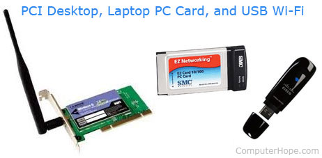

Wi-Fi
Wi-Fi is a wireless network that utilizes one of the IEEE 802.11 wireless standards to achieve a wireless connection to a network. A home wireless network uses a wireless access point or router to broadcast a signal using WAP or WEP encryption to send and receive signals from wireless devices on the network. The picture shows a wireless access point with two antennas and an example of how most home users connect to the Internet using a wireless device.
Wireless adapters
If the desktop computer or laptop does not have wireless, it requires a wireless adapter to connect to the wireless network. Below are examples of the different Wi-Fi adapters that can be used with a computer to connect to a wireless network.

In the picture above, the first image is a Linksys desktop Wi-Fi card that connects to a PCI slot on the motherboard. Next, the SMC wireless PC Card is used with older laptops that do not have a wireless option. Finally, the far right image is of Cisco USB Wi-Fi adapter that can be used on any computer with a USB port to connect to a Wireless network.
Where do I download drivers for my Wi-Fi?
The drivers for Wi-Fi devices can be found either from the website of the manufacturer of your computer or the network adapter manufacturer. If you're using a laptop, we suggest getting the latest drivers from the computer manufacturer.
Some laptop manufacturers may include the Wi-Fi drivers in the chipset driver download and not as a separate Wi-Fi adapter driver.
If Wi-Fi is not working on your device, it may not be possible to download the drivers for your device with no working Internet. Download the drivers on another computer, copy the install files onto a USB thumb drive, and then install them onto your computer from the thumb drive.
Why is Wi-Fi used?
Without Wi-Fi, every network device would need to connect to the network with a network cable (e.g., Cat 5). Having a cable for every computer and network device makes installation and deployment much more difficult, especially for a home without the proper wiring. It also makes mobility (e.g., moving around the home or office) impossible. With Wi-Fi, any compatible device with the proper reception and access rights can connect to the network without having to drag a cable to that device.
Examples of devices that use Wi-Fi
Today, there are many devices (IoT) that connect to the Internet using Wi-Fi. Below is a short list of some of the more modern Wi-Fi devices you may find in a home or office. Also, see our wireless definition for a list of other wireless devices that use a different spectrum to communicate wirelessly.
- Chromecast, Roku, and other streaming devices.
- Computers.
- Consoles (e.g., PlayStation, Wii, and Xbox).
- Digital photo frames.
- DVD and Blu-ray players.
- DVR and set-top box.
- eBook readers.
- Home automation devices (e.g., Nest Thermostat).
- Printer.
- Scales.
- Smart TV.
- Smartphone.
- Speakers and stereo systems.
- Security cameras.
- Tablet.
How can I get Wi-Fi in my home or office?
To get Wi-Fi in your home or office, you must have a wireless router. Your ISP may provide this router, or you may need to purchase the router from a local retail store or online and connect it to your existing network. Once the network is connected to your Internet, you can use any device that has Wi-Fi capabilities to connect to the Internet.
History of Wi-Fi
Wi-Fi consists of multiple different technologies that use many different patents held by various companies, so there is no one inventor or developer. In 1971, a UHF wireless packet network was used in Hawaii, called ALOHAnet, to connect the islands. While not being Wi-Fi as we know it today, it helped lay the beginning foundation to wireless networking, and later the birth of Wi-Fi.
The actual precursor to 802.11 and Wi-Fi was developed by AT&T Corporation and NCR Corporation. Called WaveLAN, it was designed for use with cash register systems for wireless communication.
In 1997, the first version of 802.11 was developed and released for use, providing 2 Megabit per second (Mbit/s) speeds. It would later be updated to 802.11b in 1999, increasing the speed to 11 Mbit/s.
The term "Wi-Fi" was coined by the Interbrand Corporation at the request of the Wi-Fi Alliance. It is not known exactly when 802.11b became known as Wi-Fi, but the term was being used in August 1999, if not earlier.
Is Wi-Fi short for wireless fidelity?
No. Wi-Fi is a brand name that is not short for anything including "wireless fidelity," which could be considered a backronym for Wi-Fi.
3G, 4G, Access point, Cordless, Hotspot, IEEE 802.11, Network terms, Phone terms, WAN, Wi-Fi calling, Wi-Fi extender, Wireless, WLAN